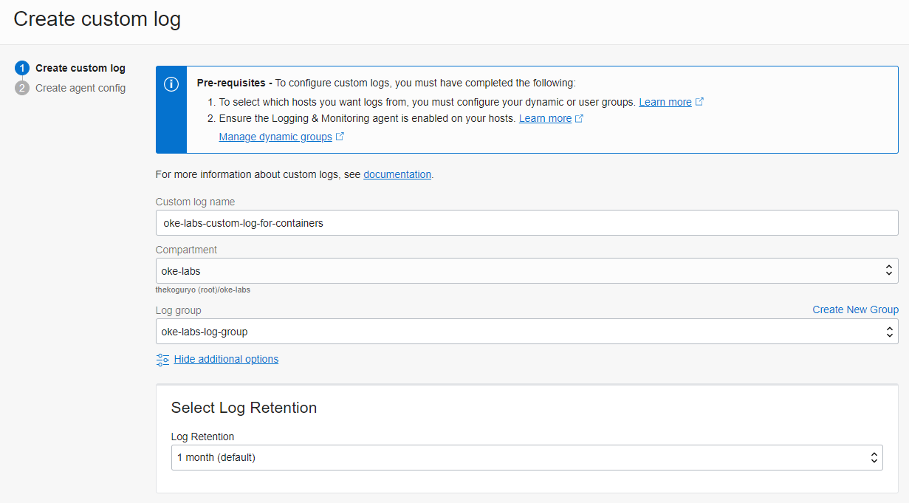
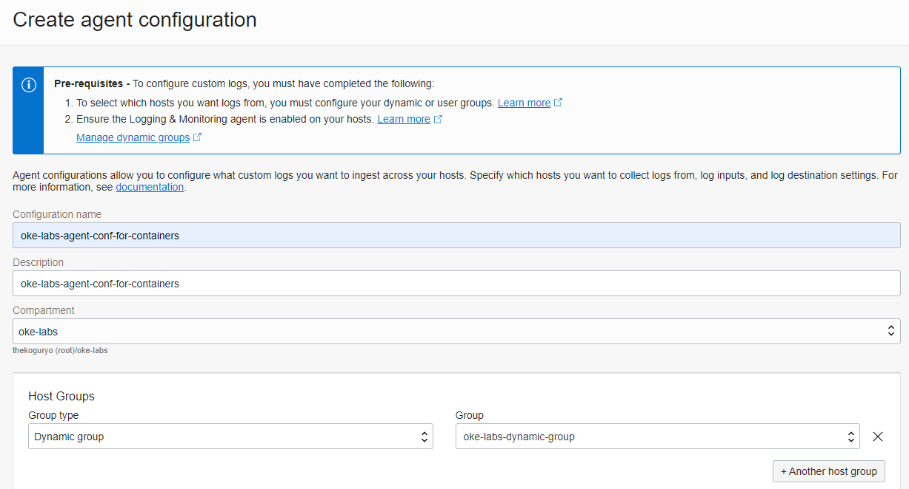
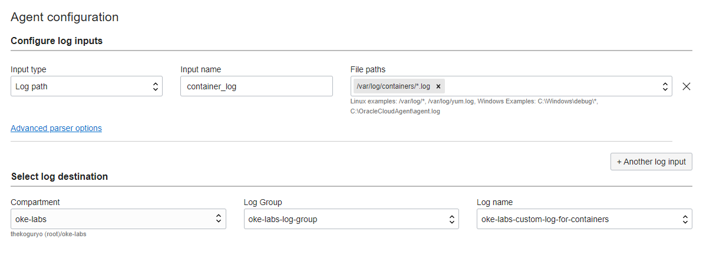
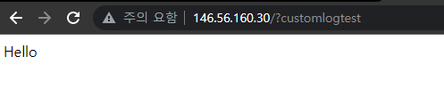
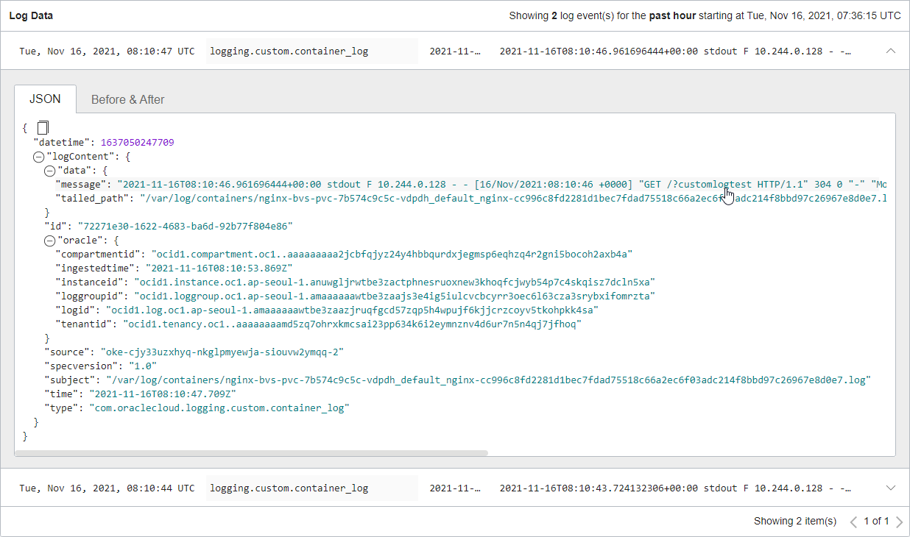

5.2.1 OCI Logging을 사용한 로그 모니터링
OKE 상에 배포되어 있는 애플리케이션 로그 모니터링을 OCI Logging 서비스를 통해 모니터링할 수 있습니다.
OCI Logging 서비스 사용 권한 설정
Worker Node에 대한 Dynamic Group 만들기
-
OCI 콘솔에 로그인합니다.
-
좌측 상단 햄버거 메뉴에서 Identity & Security > Identity > Compartments로 이동합니다.
-
OKE 클러스터가 있는 Compartment의 OCID를 확인합니다.
-
좌측 Dynamic Group 메뉴로 이동하여 아래 규칙을 가진 Dynamic Group을 만듭니다.
instance.compartment.id = '<compartment-ocid>'
Dynamic Group에 대한 OCI Logging 서비스 권한 부여하기
-
좌측 Policy 메뉴로 이동하여 아래 규칙을 가진 Policy을 만듭니다. 방금 생성한 Dynamic Group에 대한 Policy를 만듭니다.
allow dynamic-group <dynamic-group-name> to use log-content in compartment <compartment-name>
컨테이너를 위한 Custom Log 설정하기
Log Group 만들기
Log Group은 로그들을 관리하는 말 그대로 로그의 묶음 단위 입니다. 커스텀 로그를 만들기 위해 먼저 만듭니다.
-
좌측 상단 햄버거 메뉴에서 Observability & Management > Logging > Log Groups로 이동합니다.
-
Create Log Group을 클릭하여 로그 그룹을 만듭니다.
Custom Log 만들기
Custom Log는 커스텀 애플리케이션에서 수집하는 로그에 매핑되는 것입니다. Custom Log를 정의하고, 이에 대한 로그 수집기를 정의합니다.
-
Resources > Logs 메뉴로 이동하여 Create custom log를 클릭합니다.
-
로그 이름과 보관 주기 등을 설정하여 custom log를 만듭니다.

-
이해를 돕고자 Agent는 별도로 설정합니다. 여기서는 일단 Add configuration later 선택

Agent Configuration 설정
Agent Configuration는 로그를 수집하는 agent를 설정하는 부분입니다.
-
Logging > Agent Configurations 메뉴로 이동하여 Create agent log를 클릭합니다.
-
Agent 이름 및 대상 Host Group을 앞서 만든 Dynamic Group으로 지정합니다.

-
Agent 설정 부분에서 로그가 위치한 경로 및 수집된 로그의 전달 위치를 지정합니다.
-
log input: /var/log/containers/*.log
앞서 지정한 Dynamic Group상에 있는 VM, 여기서는 OKE 클러스터 Worker Node VM 상에 수집할 로그의 위치를 지정합니다.입력하고 엔터키를 꼭 칩니다.
-
log destination: 수집한 로그를 전달한 앞서 생성한 custom log 이름을 지정합니다.

-
참고: Worker Node VM상에 컨테이너 로그 위치
-
Worker Node VM에 SSH로 접속이 가능한 환경, 예, bastion host에서 Worker Node에 접속해 보면 컨테이너 로그 위치는 다음과 같습니다.
[opc@bastion-host ~]$ ssh opc@10.0.10.175 Last login: Tue Nov 16 06:43:43 2021 from bastion-host.suba22926d1b.okecluster1.oraclevcn.com [opc@oke-cjy33uzxhyq-nkglpmyewja-siouvw2ymqq-2 ~]$ sudo su [root@oke-cjy33uzxhyq-nkglpmyewja-siouvw2ymqq-2 opc]# cd /var/log/containers/ [root@oke-cjy33uzxhyq-nkglpmyewja-siouvw2ymqq-2 containers]# ls -la total 16 drwxr-xr-x. 2 root root 4096 Nov 15 14:05 . drwxr-xr-x. 13 root root 4096 Nov 15 13:55 .. lrwxrwxrwx. 1 root root 100 Nov 15 13:52 coredns-c5d4bf466-qdgrh_kube-system_coredns-a533d7375a4bd90b894d533e637bae6ce38e2e7d89cd0ff16e34bd120111c7e4.log -> /var/log/pods/kube-system_coredns-c5d4bf466-qdgrh_24b226a0-0fb3-4ede-b02f-17b177e6c248/coredns/0.log ... lrwxrwxrwx. 1 root root 101 Nov 15 14:05 nginx-bvs-pvc-7b574c9c5c-vdpdh_default_nginx-cc996c8fd2281d1bec7fdad75518c66a2ec6f03adc214f8bbd97c26967e8d0e7.log -> /var/log/pods/default_nginx-bvs-pvc-7b574c9c5c-vdpdh_aab712c6-81e1-434c-b051-f3e8fe50fa24/nginx/0.log lrwxrwxrwx. 1 root root 106 Nov 15 13:52 proxymux-client-cb86k_kube-system_proxymux-client-471c1c80fe2dc01c5e1413819af58d968796541cc744384f1b2daa566873d8ba.log -> /var/log/pods/kube-system_proxymux-client-cb86k_153b7b7a-a777-4be9-b971-657eb8ecdddd/proxymux-client/0.log -
/var/log/containers/*.log는 위에서 보는 것처럼 링크라서 kubernetes namespace 기준으로 하고 싶다면, 로그 경로를 default namespace인 경우/var/log/pods/default_*/*/*.log이렇게 해도 되겠습니다.
로깅 테스트
-
애플리케이션 로그 확인을 위해 이전 가이드에 샘플로 배포된 nginx 앱을 접속해 봅니다.

-
발생한 POD 로그는 다음과 같습니다.
oke_admin@cloudshell:~ (ap-seoul-1)$ kubectl logs nginx-bvs-pvc-7b574c9c5c-vdpdh -f ... 10.244.0.128 - - [16/Nov/2021:08:10:46 +0000] "GET /?customlogtest HTTP/1.1" 304 0 "-" "Mozilla/5.0 (Windows NT 10.0; Win64; x64) AppleWebKit/537.36 (KHTML, like Gecko) Chrome/95.0.4638.69 Safari/537.36" "10.179.87.76" -
동일한 로그가 Worker Node VM 상에서도 로그를 조회해 보면
/var/log/containers/*.log위치에 발생하는 것을 확인 할 수 있습니다.[root@oke-cjy33uzxhyq-nkglpmyewja-siouvw2ymqq-2 containers]# pwd /var/log/containers [root@oke-cjy33uzxhyq-nkglpmyewja-siouvw2ymqq-2 containers]# tail -f nginx-bvs-pvc-7b574c9c5c-vdpdh_default_nginx-cc996c8fd2281d1bec7fdad75518c66a2ec6f03adc214f8bbd97c26967e8d0e7.log ... 2021-11-16T08:10:46.961696444+00:00 stdout F 10.244.0.128 - - [16/Nov/2021:08:10:46 +0000] "GET /?customlogtest HTTP/1.1" 304 0 "-" "Mozilla/5.0 (Windows NT 10.0; Win64; x64) AppleWebKit/537.36 (KHTML, like Gecko) Chrome/95.0.4638.69 Safari/537.36" "10.179.87.76" -
OCI 서비스 콘솔에서 Logging 화면으로 다시 돌아갑니다.
-
Agent, Logs, Log Groups 각 화면에서 Resources > Explore Log에서 로그를 조회 할 수 있습니다. 검색을 위해서는 로그목록 오른쪽위에 있는 Explore with Log Search를 클릭합니다.
-
Custom filters 항목에서 POD 이름 또는 앞서 테스트 URL에 있는 customlogtest 같이 검색값으로 조회하면 됩니다. Custom filters에 값을 입력하고 엔터키를 꼭 칩니다.
- Log Agent를 통해 수집되는 주기가 있어 5분 내외가 걸릴 수 있습니다.
- 앞서 MuShop 앱 테스트 URL 한번만 접속한 경우 구간내에 Log Flush가 안되어 계속 기다려도 로그 조회가 안될 수 있으니, 테스트 URL 여러번 반복 접속합니다.
-
검색된 로그 데이터를 확인할 수 있습니다.

** 이 글은 개인으로서, 개인의 시간을 할애하여 작성된 글입니다. 글의 내용에 오류가 있을 수 있으며, 글 속의 의견은 개인적인 의견입니다. **